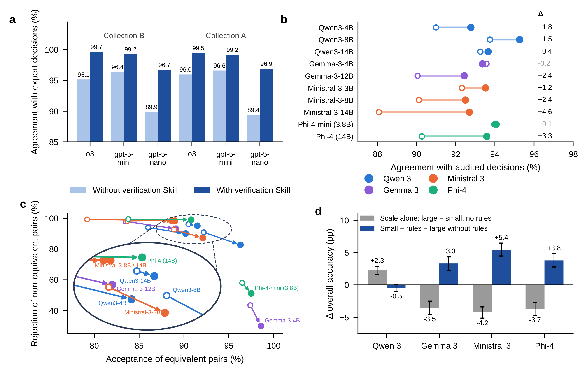

一篇钙钛矿太阳能电池论文可能报告多种器件。最高效率、制备参数和稳定性分别出现在正文、表格和补充材料里。即使每个数字都抄对了，只要把某个对照器件的工艺接到冠军器件上，后续分析就会建立在一条实际不存在的实验记录上。VerifiedLab 先把论文整理为逐字段核验的记录，再让研究智能体用这些记录计算证据，并检查证据能支持哪些主张。
本文解读 Yu Yao、Jiayi Dong 等人的 VerifiedLab: Harnessing Knowns for Unknowns，依据 2026 年 10 月 27 日提交的 arXiv v1 预印本。
一、课题解读：让实验文献成为可复用的数据
材料研究常需要把不同实验室的结果放到同一张表中，比较材料组成、器件结构或制备步骤与性能的关系。一条可复用的记录要回答三个问题：数值属于哪个样品，在哪一步或哪种条件下测得，以及回到原文哪里可以核对。
钙钛矿太阳能电池的功率转换效率（PCE）衡量入射光功率有多少转成电功率。一个效率数字只有和器件结构、测量条件及报告口径连在一起时，才适合与其他记录比较。稳定性尤其依赖条件：同样的剩余效率比例，离开测试时长、湿度和光照就难以解释。对科研智能体来说，提取文献只是第一步，还要判断提取结果适合支持什么分析。
二、相关文献解读：从共享数据到判断可用性
| 工作 | 已有做法 | 与本篇的连接 |
|---|---|---|
| FAIR 数据原则 | 提出数据应可发现、可访问、可互操作、可复用 | 让实验记录能被程序找到、识别和追溯，后续仍需判断字段准确性 |
| Perovskite Database Project | 人工整理公开文献里的钙钛矿器件数据，提供数据库和分析工具 | 提供一部分专家参考记录，也说明如何以结构化字段开展跨论文分析 |
| LLM4Mat-Bench | 比较通用模型和专门模型的材料属性预测能力 | 引出下游问题：从论文抽出的器件配方能否支持按年份留出的效率预测 |
VerifiedLab 把两个环节接起来：先测量自动抽取与核验的可靠性，再用同一批记录恢复已知规律、预测后一年发表的器件性能。
三、研究问题解读：从抽取准确到下游可用
下面三个问题是我们的阅读归纳。
- 能否把同一器件的材料、工艺和测量连成一条记录？ 要检查模型在哪些字段上最容易弄错样品、工艺步骤或测量条件。
- 能否用显式规则让自动核验更接近专家判断？ 需要在相同字段对上比较有无规则，并区分与专家直接对照和与经审计模型对照。
- 这些记录是否足以支持后续研究？ 可以检验已知趋势和时间外预测，同时观察在证据不可靠时，研究流程如何限制可发布的主张。
四、方法解读：建立记录，再限定证据用途

第一步：按统一口径选器件，填入 97 个字段
输入是论文正文和补充材料。生成器根据专家编写的标注 Skill，以明确报告的扫描 PCE 选择每篇论文的冠军器件，再填写文献、器件定义、层堆栈、材料合成、器件制备、J–V 指标和稳定性七类字段。规则规定先映射正文和补充材料里的样品编号，并保持层顺序和单位。未报告、归属不明或只能推断的值写作 Null。这样下游比较有了统一的观测单位，也留下了每篇只纳入一个优胜器件的选择效应。Methods
第二步：按领域规则核验每个字段
在有专家参考值的评测中，核验器接收字段定义、候选值、参考值和规则。它判断两值是否等价，或者属于双方为空、遗漏、无依据填值、两值不匹配。比如兼容单位和化学别名可以接受，层顺序颠倒或从另一个器件借值会判错。Harness 检查数据结构和返回标签，并记录文档、模型版本、Skill 版本与判定来源，便于回看错误出在抽取还是规则。论文的两个 Skill 分别管怎样填记录、怎样判等价，规则修订由专家审计推动。
第三步：随记录发布来源和字段类别可靠性
作者将抽取流程应用到 2021 年至 2025 年 4 月的 10,258 篇实验论文。gpt-5-mini 生成记录，gpt-5-mini 与 o3 分别进行复核。发布的数据带来源 DOI 和类别级的可靠性分数。分数来自自动核验，描述一类字段的整体表现，不能读成某个单值正确的概率。稳定性字段整体最弱，两项下游分析均排除了它。Methods 与数据说明
第四步：计算证据，再审查研究主张
在作者的设计演示中，PI 规划问题，图书管理员从记录计算统计量，领域专家角色起草主张，预测器估计候选配方的 PCE。可靠性门控先限制能用的字段类别，批评者再检查具体主张是否受到证据支持。例如证据可以支持讨论效率趋势时，草稿中暗示稳定性改善的分句仍会被删掉。原论文 Fig. 6 的对话和会议是示意，数字来自数据库和预测器。它说明流程如何工作，实验效果要看下游回测与字段评测。Fig. 6 与演示设置
五、实验设计与结果：先看数据能否支持下游分析
主实验：恢复已知趋势，并预测后一年发表的器件
作者先检查数据库能否重现文献常见的效率分布。Fig. 5 显示，高效率器件集中在较窄的带隙窗口，分布低于 Shockley–Queisser 理论上限，较大器件的效率整体更低、分布更散。各图使用有对应可解析字段的记录。这说明数据库可用于分析已发表冠军器件的总体分布，面积、架构与效率之间的关系仍属于观察性关联。

更直接的检验是时间留出预测。作者筛出 8,450 条有年份、反向扫描 PCE 大于 0 且不超过 30% 的记录，用截至 2023 年的 5,422 条训练、2024 年的 2,170 条验证、2025 年的 858 条测试。预测器只看 71 个配方字段，移除 J–V、稳定性和书目信息，避免其他效率指标或标题直接暴露答案。测试集 PCE 超过 20% 的比例从训练集的 43.5% 升到 65.5%，因此这组回测也包含分布变化。真值取自论文报告的测量值。
| 对照（节选） | MAE（PCE 百分点，↓） | R²（↑） | PCE > 20% 的 ROC AUC（↑） |
|---|---|---|---|
| 恒猜训练集均值 | 5.69 | −0.22 | 0.500 |
| LightGBM，18 个专家描述符 | 2.87 ± 0.01 | 0.60 ± 0.00 | 0.904 ± 0.001 |
| LightGBM，全部配方字段 | 2.48 ± 0.01 | 0.69 ± 0.00 | 0.930 ± 0.001 |
| MatSciBERT，微调 | 2.24 ± 0.09 | 0.71 ± 0.03 | 0.935 ± 0.002 |
| T5-base 编码器，微调 | 2.20 ± 0.06 | 0.68 ± 0.02 | 0.934 ± 0.002 |
| Llama-3.1-8B-Instruct，零样本 | 4.10 | −0.02 | 0.642 |
| Llama-3.1-8B-Instruct，检索五样本 | 2.82 | 0.50 | 0.867 |
来源：Fig. 5h 与时间预测方法。带 ± 的结果为三个随机种子的均值与标准差。
全部配方字段使同一 LightGBM 的平均误差从 2.87 降到 2.48 个百分点，说明详细记录带来了额外的预测信息。T5 的平均绝对误差最低，MatSciBERT 的 R² 和 AUC 在这两者中更高。该比较检验的是对历史留出器件的预测能力。论文没有把同一预测器在核验和未核验记录上做等条件比较，因此不能把预测收益单独归因于核验步骤。
机制评测：规则能改善哪些抽取和核验错误
抽取评测覆盖 100 篇论文 × 97 字段。作者在相同文档、结构和判定器下比较 18 个生成模型有无标注 Skill，每种设置 9,700 次字段判断。全空记录也能达到 36.4% 准确率，因为很多字段确实未报告。加入规则后，各生成器的总体准确率提高，但跨段落绑定的字段仍容易出错，例如工艺气氛被写到另一个步骤。作者使用经审计的 o3 核验器评分。Fig. 3 和 Methods

自动核验的评测分两层。Fig. 4a 的直接专家对照含集合 A 的 1,940 次、集合 B 的 1,460 次判断。加入核验 Skill 后，o3 在 A 的一致率从 96.0% 升到 99.5%，在 B 从 95.1% 升到 99.7%。十个开放权重模型另在 9,700 个字段上与经审计的 o3 比较；规则主要修复了因别名、单位和写法差异而误拒等价值的问题，对本来就会放过错误值的模型帮助较有限。这里的一致率衡量候选与参考的比较能力，不能当成整库抽取准确率。
六、我们自己的思考
课题思考：这个领域在研究什么
科研智能体使用文献时，需要继承的是带条件的实验事实。把样品、步骤、原文位置和核验规则留在记录里，后续的人或 Agent 才能判断一项主张究竟依赖了哪些证据。我们认为，VerifiedLab 最有启发性的设计是让这种判断发生在发布主张之前，而不只留在数据集说明里。
局限问题思考：目前还存在哪些问题
- 类别均值可能掩盖单条错误。 两个自动核验器可以同时漏掉同一种样品错配，其中一个和生成器共享模型家族。专家对照的高一致率也不能直接外推到全部部署记录。
- 训练和回测都受发表样本限制。 每篇只收冠军器件，2025 年测试只覆盖已发表论文中的留出样本。模型对失败配方、未见过的工艺和后续年份的误差仍未知。
- 门控与批评者的贡献尚未独立测量。 论文展示了何时应删掉不受支持的主张，但没有用同一批任务比较开关门控后的主张质量和遗漏代价。
解决方案思考：这些问题有哪些解决方向
- 按风险抽样专家复核。 对稳定性、层顺序和跨样品字段做分层复核，记录具体误接的位置，并报告不同类型错误和无法核对的比例。
- 预注册后续验证。 固定训练截止时间，纳入对照与失败记录，事先为待预测配方锁定模型和误差指标，再用独立实验检验。
- 成对比较门控行为。 在相同数据库、模型和预算下开启或关闭门控，让专家盲评已发主张的证据充分率，以及被拦下但实际成立的主张数量。
来源：原论文 PDF v1、官方代码、公开数据。本文插图由原论文 Fig. 2、4、5a–g 的矢量图转换，未改绘，署名 Yu Yao 等，依 CC BY 4.0 使用。Fig. 2 图标来源为 Heroicons（MIT）与 Font Awesome Free（CC BY 4.0）。